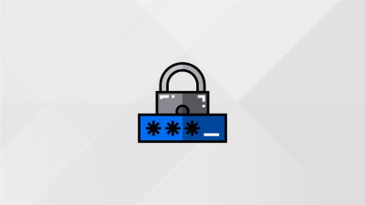

Cybersecurity is a work field in which one’s goal is to protect various structures (mobile devices, computers, servers, etc.) and their data against malicious external attacks. Nowadays, due to the sharp increase in attacks and their damage, Cybersecurity has become subject of growing attention and necessity in the professional world. The consequences of the overly tolerant and laid-back approaches often taken by companies that are ignorant of the importance of IT security can already be felt today.
But with digital technologies becoming parts of our daily life, cyber-attacks can no longer be ignored. Knowing how to secure one's network has very quickly become a major necessity for many organisations in all fields of work. Whether it is being a pentester, a security analyst, a network administrator or even an IT security expert, there are many jobs related to this field. But whatever they are, one thing is certain, they already represent the future of tomorrow and their importance in the long run is obvious.
Its objectives / missions within the company
A cybersecurity expert must be versatile in his or her work, but above all else, the true role of a cybersecurity expert is to ensure the protection of system’s data and guarantee the proper operation of said computer system. He/she assesses the level of vulnerability and security of the computer system to detect any potential vulnerabilities that could be exploited by an attacker. He/she seeks to remove any possible opening that a virus could use and seeks to thwart hackers' intrusion attempts. In addition to bringing awareness about security, the cybersecurity expert has a range of tools and processes to make sure everything runs smoothly.
Although usually reserved for experienced IT specialists with several years of experience in the field of IT security The best way to start in this professional field still remains going to an engineering school, with a specialisation in computer security. But various university diplomas (BAC+5 / BAC+6) are also accepted, such as the master's degree in security, reliability, and performance. of digital technology offered by the Pierre-et-Marie-Curie University in Paris, or the master's degree in information security and cryptology in Limoges.
- Engineering degree from Télécom ParisTech of the Institut Mines-Télécom
- Expert in computer science and information systems (IPSSI)
- Systems and network engineering expert
- Engineering degree from the Institute of Computer Engineering (Limoges)
- Specialized Master's Degree in Computer security (ENSEEIHT - INP Toulouse - ENAC - INSA Toulouse)
- Expert in information technology (EPITECH)
- Expert in information technology (EPITECH)
- Carry out different vulnerability tests
- Implementation of various security processes to prevent cyber-attacks
- Ensuring the sustainability of different security systems
- Ensuring the data integrity of a system
- Setting up efficient and secure systems customized to the company
- Regulating access to different system parts according to different privilege levels
A cybersecurity expert must be ready to travel, work alone or in a team, and must be able to quickly react to frequent unforeseen circumstances. Highly sought-after in today’s economy, security professionals tend to either work in a dedicated department of a single, fairly large company (e.g., a bank, a university, etc.), or are part of a third-party company where they offer their skills as a service to other SMEs in need. The job of a cyber security expert, while rewarding, can nevertheless be just as stressful for some due to the high responsibility of the professional and regular unforeseen events requiring constant adaptation to new environments.
As a growing industry, cybersecurity is an important factor for a wide range of sectors. With gargantuan amounts of data that can be compromised and exploited, here is a list of industries hiring the most in the field of computer security.
Responsible for large financial transactions and a place where huge sums of money are involved, this sector is one of the most sensitive to cyber attacks. This is why it is one of the biggest recruiters of experts in the field of cybersecurity.
Following the same logic as for financial services, commerce has been able to adapt perfectly to the expansion of new technologies, and today represents one of, if not the favourite playground for cybercriminals. Transactions, goods, banking information and personal data, a true goldmine that attracks criminals like a fly trap.
Logistics services have evolved significantly over the last 20 years and are highly dependent on the Internet for tracking services, operating interconnected fleets and providing faster and more efficient services. This explains their role as one of the sectors that recruit the most in cybersecurity.
The importance of cybersecurity in the healthcare sector is now being recognised. In link with current events, many hospitals are subject to recurring attacks that can endanger the health of hospital patients.
Being a true goldmine of private information and data, the oublic sector is a rewarding target for cybercriminals. Their security is crucial to the protection of our data.
Similarly to the public sector, they have information that is important and interesting for malicious people. Another example of the importance of cybersecurity these days.
The rise of fakes news and the protection of personal data is an issue that should not be underestimated. Nowadays, the digital world carries a lot of personal or public information. This is why their security must be increased and well organised.